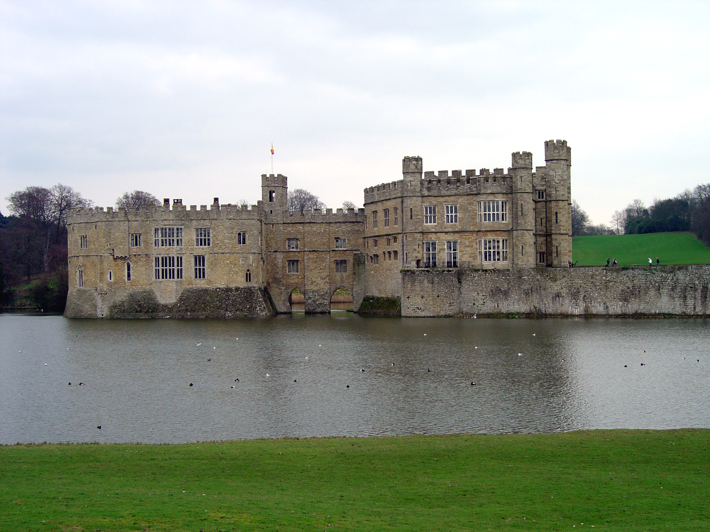
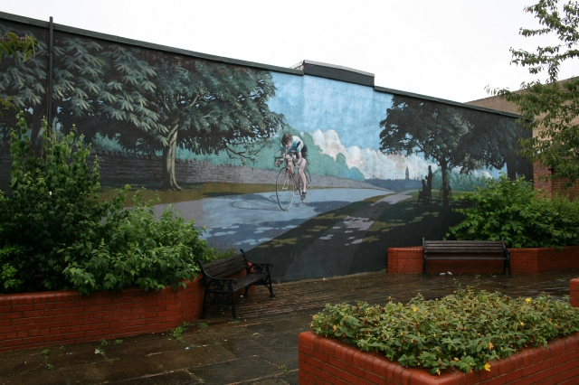
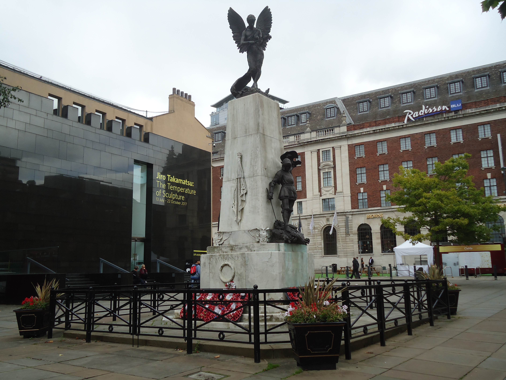
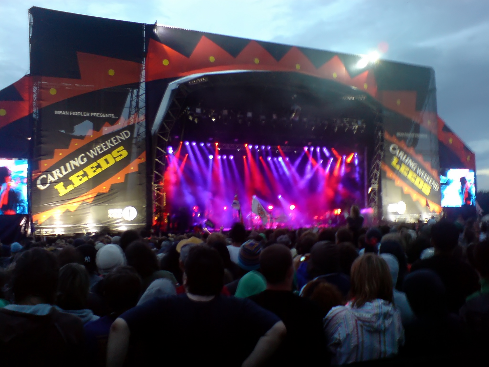

Where is Leeds?
- It's the capital of the metropolitan county of West Yorkshire (in North England), with 213 square miles and 784000 inhabitants.
- It's the third biggest city of the Great Britain (first and second biggest cities are London and Birmingham).
Landmarks
Leeds Castle

Beryl Burton Memorial Garden

Leeds War Memorial

Festivals
The most important festival in Leeds is "Leeds Festival", which hosts famous international artists.

Credits
Slide 1: flickr.com/photos/r44flyer/
Slide 4:
2. Author: Steve Partridge
3. Author: Eric Hindle
Slide 5:
Author: Ian Wilson from London, England